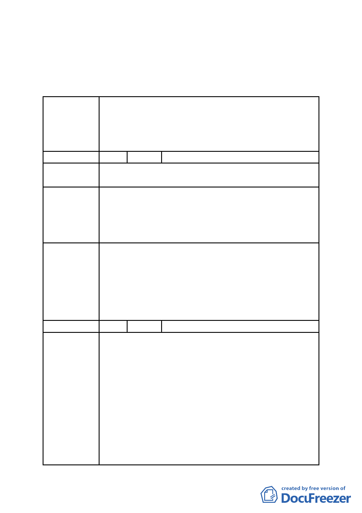

訂主要計畫案內『基隆河（中山橋至成美橋）附近地區土
地使用分區與都市設計管制要點』』案規定辦理」。
二、 公民或團體陳情意見審決如後附綜理表。
臺北市都市計畫委員會 公民或團體陳情意見綜理表
修訂臺北市基隆河（中山橋至成美橋段）附近地區細部計
畫商業區（供於樂健身使用）街廓編號 B4 基地（中山區金
案名
泰段 24-1 等 7 筆地號）土地使用分區管制規定與都市設計
管制要點計畫案
編 號 1 陳情人 陳議員玉梅
陳
情
理
由
目前大彎北段商業區之建物使用現況，大多違規作為住宅
使用。
為避免都市計畫變更公告實施後，造成未來有更大量之違
規使用情事發生，故建議地上 1 至 3 層樓維持商業使用，
建 議 辦 法 地上 4 層樓以上開放作為住宅使用，住宅使用比例≦2/3
總容積，高度限制以不阻擋河岸景觀，及免辦環境影響評
估審查之 70 公尺為原則。
大彎北段地區係屬「2010 年臺北好好看」之科技產業軸
帶，基於其規劃理念係為提供產業進駐誘因、帶動城市發
委員會決議
展活力，故區內「2010 年臺北好好看」申請案之「土地使
用」部分，其因申請「2010 年臺北好好看」所獲容積獎勵
部分得比照商三所允許之使用項目，惟不得作住宅之使
用；至於其餘部分仍應依本區 92 年公告實施之都市計畫規
定辦理，不得作住宅之使用。
編 號 2 陳情人 奇泰建設有限公司等
一、目前大彎北段商業區之建物使用現況，大多違規作為
住宅使用，為避免都市計畫變更公告實施後，造成未
來有更大量之違規使用情事發生，故建議地上1至3層
維持商業使用 , 地上4層以上開放作為住宅使用，住
陳情理由
宅使用比例≦ 2/3 總容積，高度限制以不阻擋河岸景
觀，及免辦環境影響評估審查之 70 公尺為原則。查
內湖科技園區原定位為工業區，歷經前、後任市長計
11次之使用用途放寬，加上內科園區之土地取得成本
較低，而大彎北段當初重劃配地時，商業區土地成本
為住宅區之2倍，故在內科園區開放商業使用之影響
下，內科園區之商業使用早已取代大彎北段原設定之
商業使用，以致於目前大彎北段已興建完成之商業
- 58 -